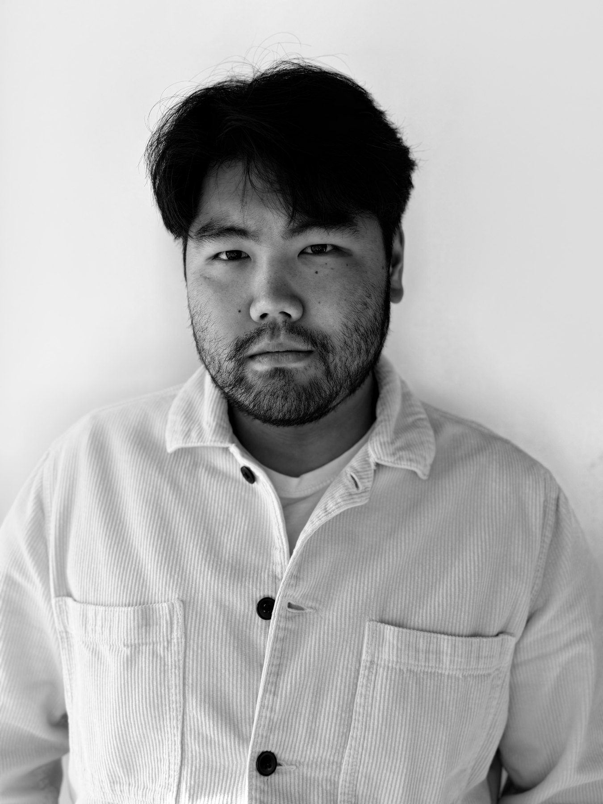
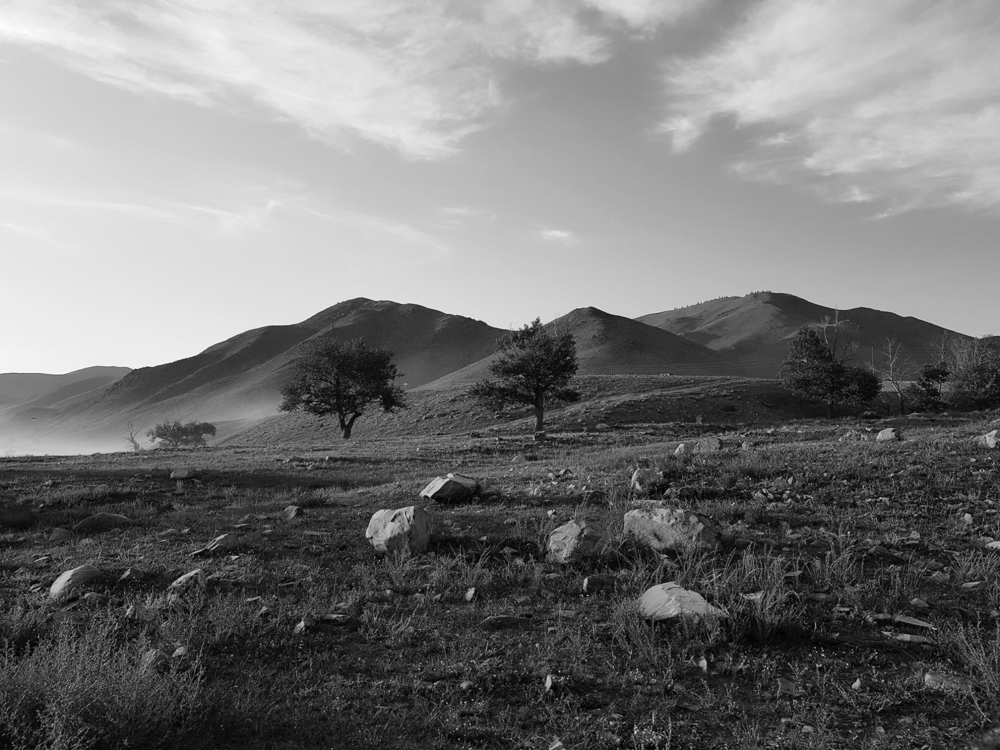

Studio

Oprichter & interieurarchitect
Geïnspireerd door natuur en ritueel.
Uw ruimte wordt ontworpen vanuit wie u bent. De natuur geeft het materiaal en het licht; uw rituelen, hoe u ontwaakt, kookt, ontvangt en tot rust komt, geven de vorm.
Of het nu uw thuis is, een kantoor, een winkel of een plek voor gasten: u werkt rechtstreeks met één interieurarchitect. Het resultaat voelt persoonlijk, is tijdloos en is gemaakt om te blijven.

Een interieur dat volledig van u is.
Voor wie geen generiek interieur wil en geen keuze uit drie moodboards. Uw project begint met een echt gesprek: hoe u zich door de ruimte beweegt, waar u blijft hangen, wat u altijd al wilde maar nooit de woorden voor vond.
Zo ontstaat een interieur afgestemd op hoe de ruimte echt gebruikt wordt, niet op hoe ze fotografeert.
Materiaal dat u voelt voor u het ziet.
Een materiaal bepaalt hoe een ruimte elke dag aanvoelt, en wat ze over twintig jaar nog te zeggen heeft. Eik, natuursteen, leem en linnen verouderen niet, ze rijpen, en worden hersteld in plaats van vervangen.
Duurzaamheid is hier geen toevoeging, maar het gevolg van goed kiezen.
Onbehandeld hout en natuursteen geuren subtiel en levend, een ruimte die ruikt naar wat ze ís, niet naar lak of lijm.
Steen houdt koelte vast in de zomer, hout draagt warmte nog voor u het aanraakt. Materiaal dat met het seizoen meebeweegt.
De nerf van eik, de korrel van leem, de hand van linnen, oppervlakken die de vingertoppen herkennen en uitnodigen tot aanraken.
Kwaliteit boven kwantiteit. Altijd.
Echte aandacht valt niet te schalen. Daarom krijgt elk jaar bewust maar een beperkt aantal projecten een plaats, zodat uw project het volledige gewicht krijgt dat het verdient.
Bekijk het werk →Werkwijze
Volledig trajectU vertelt uw verhaal: hoe u leeft, wat u nodig heeft, waar u van droomt voor uw thuis.
U ontvangt een heldere ontwerpvisie en lay-out die meteen als de uwe aanvoelt.
U kiest mee elk materiaal en detail, alles afgestemd op wie u bent.
Ik stuur aannemers en ambachtslieden aan en volg de werf op, tot alles samenvalt zoals bedoeld.
U stapt binnen in een thuis dat volledig klopt, nagekeken tot in het laatste detail.